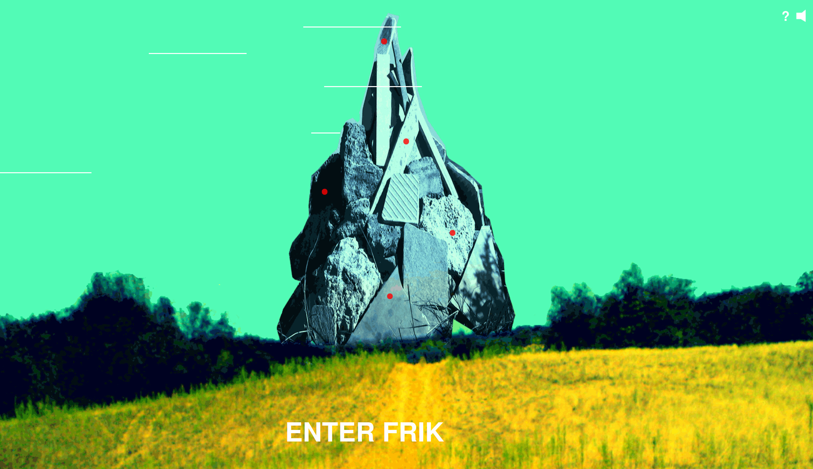
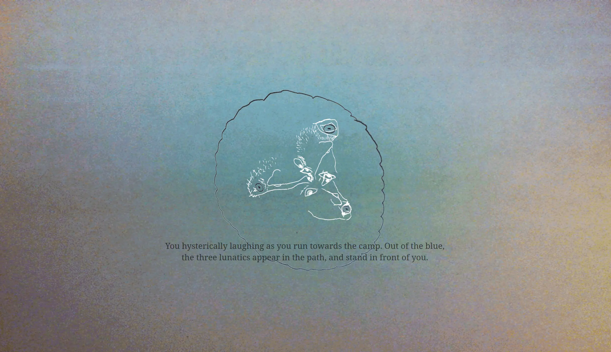
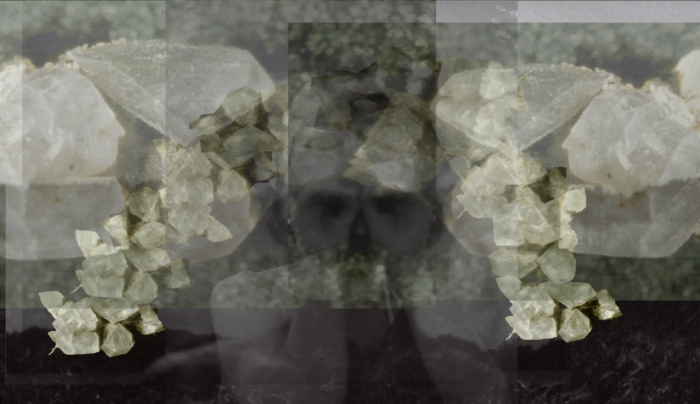

FRIK

An audiovisual-literary web epic created by the Hungarian experimental band Dorota. I used Web Audio and hand-crafted CSS3 animation to build an immersive experience of the beautiful world of FRIK.

I have spent several days and nights producing the work with Dorota in Tök and Budapest. Taking recordings from the FRIK album trilogy, found sounds and images, voice recordings of the band members, we built a web artwork which consisted of five distinct chapters, each driven by its own hand-coded engine.

The work was created in a close co-creation process with the band. Code was improvised together and iterated over many times. The final video clip was filmed after the final night of production, with the sun rising over Budapest. A pile of rubble and broken tiles in a vineyard in Tök became the sacred mountain of Szavadivi.